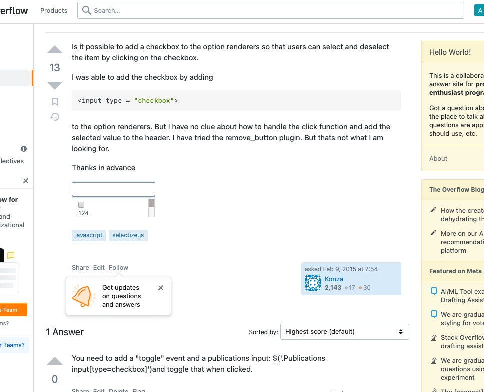

Lab 14 - Debugging
Challenge
In this lab, we were suppose to debug a pervious lab but because I didn't have any labs that didn't work, I needed to do task x which was answering questions from other people.
Problems
My problem is that people on the website seemed to have much more programming experience than me so I found one question that I was able to research the answer to.
Reflection
This lab not too bad because I didn't have any pervious labs to debug
Answered question
